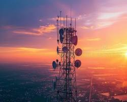

Radiación No Ionizante
Esta categoría abarca emisiones de baja energía, como las ondas de radio y la luz visible. Carecen de la potencia necesaria para arrancar electrones de los átomos, interactuando principalmente mediante el calor y la vibración molecular, lo que las hace fundamentales y seguras para las telecomunicaciones modernas.
¿Sabías que la radiación está presente en tu vida diaria incluso sin intervención humana?
La radiación se define fundamentalmente como la emisión y transmisión de energía a través del espacio o de un medio material en forma de ondas electromagnéticas o partículas subatómicas. Este fenómeno es una parte intrínseca del universo y no siempre está vinculado a actividades humanas; de hecho, convivimos con ella constantemente a través de la luz solar, el calor que emite el suelo y las señales de radio que permiten las telecomunicaciones modernas.
Para comprender su naturaleza, es crucial distinguir entre la radiación no ionizante y la ionizante. La primera incluye formas de energía de baja intensidad, como las ondas de microondas, el infrarrojo y la luz visible, que tienen la capacidad de hacer vibrar las moléculas y generar calor, pero carecen de la fuerza necesaria para alterar la estructura íntima de la materia. Por el contrario, la radiación ionizante posee una energía tan elevada que puede arrancar electrones de los átomos, un proceso que puede modificar la química de las células y que requiere protocolos de seguridad específicos en sus aplicaciones médicas e industriales.
En el ámbito de la radiación ionizante, encontramos principalmente tres tipos de emisiones: alfa, beta y gamma. Las partículas alfa son núcleos pesados que, aunque muy energéticos, pueden ser detenidos por una simple hoja de papel. Las partículas beta son electrones rápidos que penetran un poco más, pero son bloqueados por láminas de metal o plástico. Finalmente, los rayos gamma son ondas electromagnéticas puras de altísima energía con un gran poder de penetración, lo que obliga al uso de blindajes densos, como el plomo o gruesos muros de hormigón, para contenerlos de manera efectiva.
Finalmente, es importante reconocer que la exposición a la radiación es un hecho cotidiano debido al fondo radiactivo natural, el cual proviene de fuentes cósmicas y de minerales presentes en la corteza terrestre, como el uranio o el potasio. En la actualidad, el ser humano ha aprendido a canalizar estas propiedades para beneficios significativos, utilizándola en la medicina para diagnósticos por imagen y tratamientos oncológicos, así como en la geología para el estudio de minerales y en la producción de energía limpia. La clave para su aprovechamiento reside en la comprensión de las dosis y la implementación de protecciones adecuadas para minimizar cualquier riesgo biológico.
La radiación puede profundizarse analizando el concepto de estabilidad atómica, que es el motor que genera la mayoría de las emisiones que estudiamos. La mayoría de los átomos en la naturaleza son estables, pero algunos poseen un exceso de energía o una proporción desequilibrada de neutrones y protones en su núcleo. Para alcanzar un estado de menor energía y mayor estabilidad, estos núcleos "se rompen" o se transforman de manera espontánea, liberando el exceso en forma de radiación. Este proceso de desintegración es lo que conocemos como radiactividad, y ocurre a un ritmo constante y predecible para cada sustancia, medido por lo que los científicos llaman "vida media".
Otro aspecto fundamental es el espectro electromagnético, que funciona como una escala de energía donde se organizan las diferentes formas de radiación. En un extremo tenemos las ondas de radio y microondas con longitudes de onda muy largas y baja frecuencia; en el centro, una estrecha franja que nuestros ojos pueden detectar, la luz visible; y en el extremo opuesto, la radiación de alta frecuencia como los rayos ultravioleta, rayos X y rayos gamma. Esta organización es vital porque determina cómo interactúa la energía con la materia: mientras que las ondas de radio simplemente atraviesan una pared o rebotan en ella, los rayos X tienen la frecuencia necesaria para interactuar con las densidades internas de un cuerpo humano, permitiendo ver los huesos sin necesidad de cirugía.
En cuanto a los efectos biológicos, la introducción a la radiación debe abordar el concepto de transferencia lineal de energía. Cuando la radiación ionizante atraviesa un tejido vivo, deposita energía a lo largo de su trayectoria. Si esta energía alcanza el ADN de una célula, puede causar rupturas en las cadenas moleculares. Sin embargo, el cuerpo humano tiene mecanismos de reparación increíblemente eficientes; el daño real ocurre solo cuando la dosis es tan alta que supera la capacidad de reparación de la célula o cuando la reparación es defectuosa, lo que podría derivar en mutaciones. Por esta razón, la radioprotección se basa en tres pilares fundamentales que cualquier estudiante debe conocer: la distancia (a mayor distancia, menos intensidad), el tiempo (menor tiempo de exposición implica menos dosis acumulada) y el blindaje (barreras físicas que absorben la energía).
El estudio de la radiación se extiende a campos como la mineralogía y la datación geológica. Los minerales de la Tierra contienen trazas de elementos radiactivos que actúan como "relojes naturales". Al medir la cantidad de productos resultantes de la desintegración dentro de un cristal o una roca, los científicos pueden determinar con precisión cuándo se formó esa estructura. Esto no solo nos permite entender la historia de nuestro planeta, sino que también ayuda a identificar yacimientos y comprender la composición química de la corteza terrestre, demostrando que la radiación es una herramienta de lectura del pasado geológico.
¿Estás listo para profundizar en el fascinante mundo de la física nuclear?
Radiación Ionizante
La radiación ionizante, incluyendo rayos X y gamma, posee una energía tan alta que puede desprender electrones y alterar la estructura molecular de las células vivas. Su gran poder de penetración exige protocolos de seguridad estrictos y el uso de blindajes como el plomo en sus aplicaciones médicas e industriales.
DATO CURIOSO: El yodo radiactivo es un riesgo común. Los filtros de carbón activado son vitales.